Jon Nordby jonnord@nmbu.no
November 15, 2018
a machine learning practitioner
without prior knowledge about sound processing
can solve basic Audio Classification problems
Machine learning basics
Basic signal processing
Computational Analysis of Sound Scenes and Events. Virtanen,Plumbley,Ellis (2018)
Human and Machine Hearing - Extracting Meaning from Sound, Second Edition. Richard F. Lyon (2018)
DCASE2018 Bird Audio Detection challenge
50+ papers on Acoustic Event Detection etc.
Various usecases and tasks that Machine Hearing can be applied to.
What is this person saying?
What key is this music in?
What kind of place is this from?
Is this a healthy heart?
Is this machine operating normally?
What kind of animal is this?
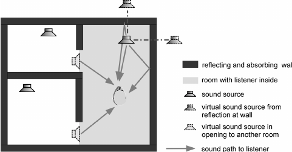
Two ears (Binaural). Frequencies approx 20Hz - 20kHz.
A non-linear system
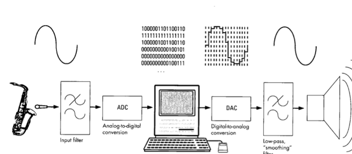
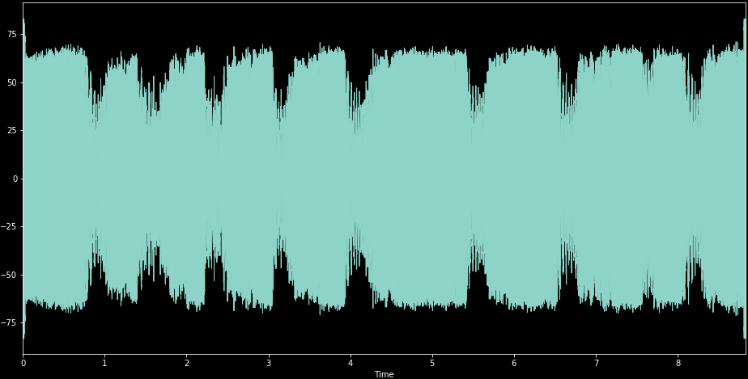
Normally logarithmic scale
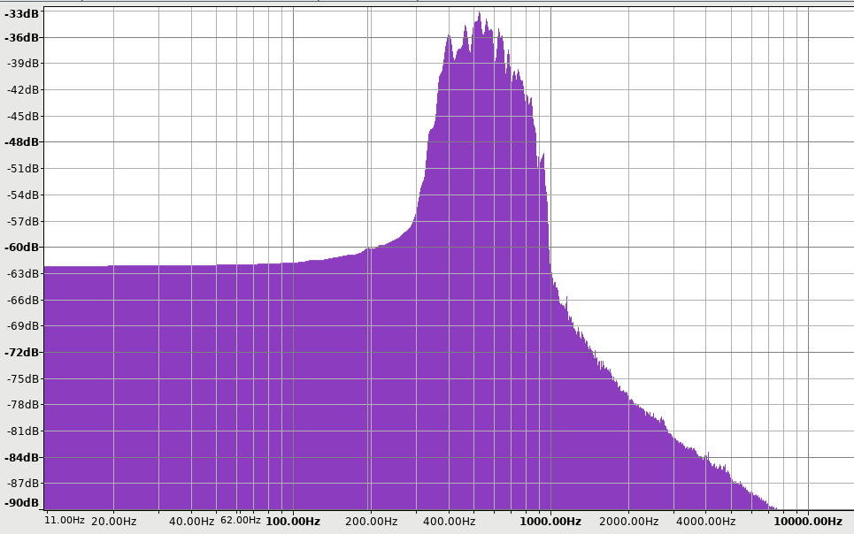
Fourier Transform.
Short-Time-Fourier-Transform (STFT)
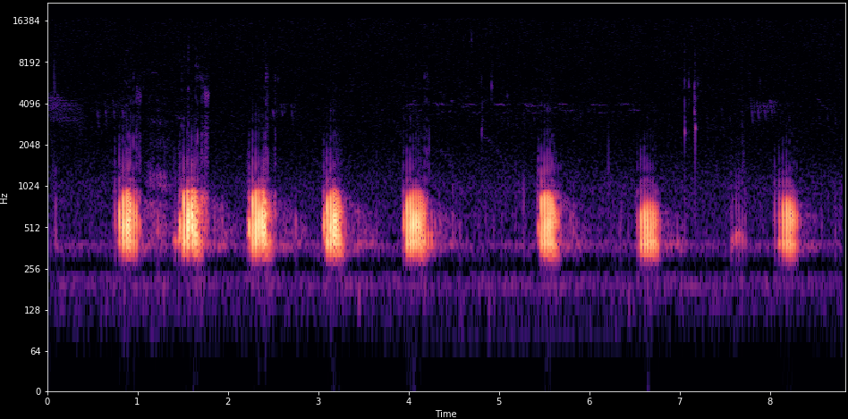
Spectrogram
Mismatched conditions: 2 testsets with no training samples.
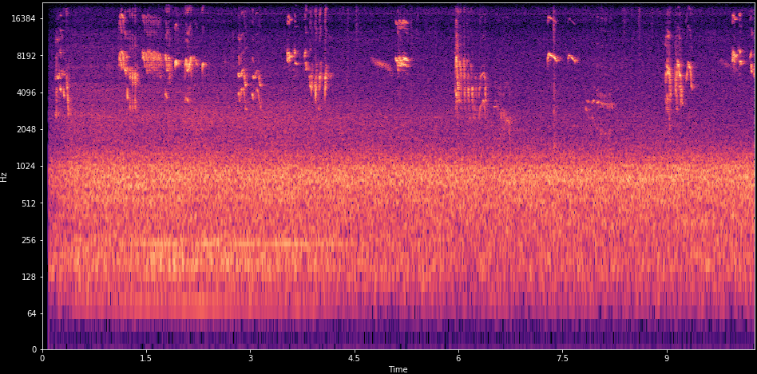
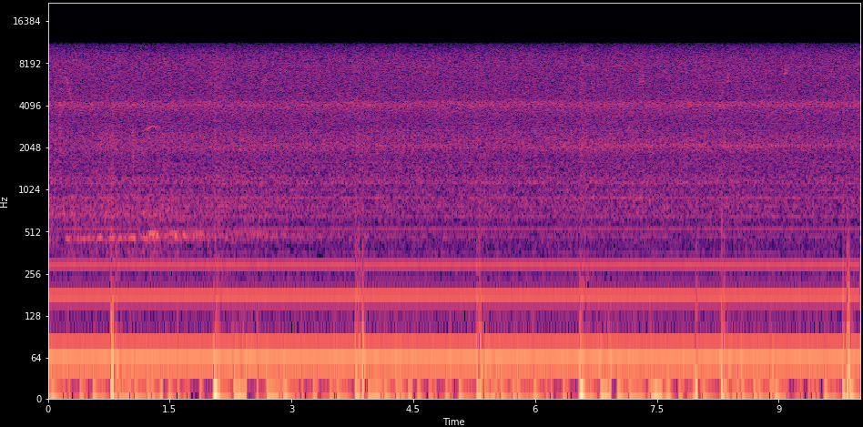
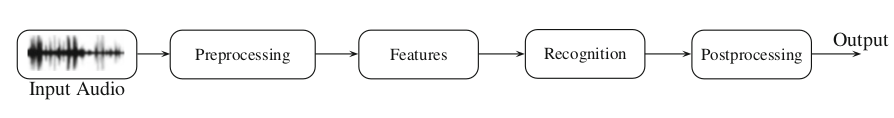
Cut audio into short overlapping segments
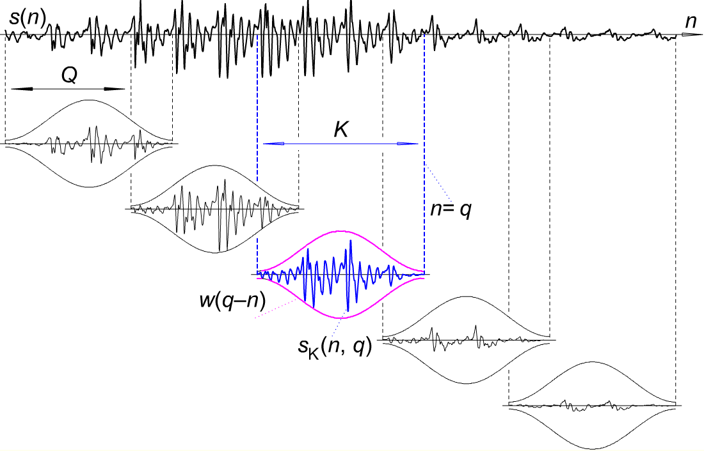
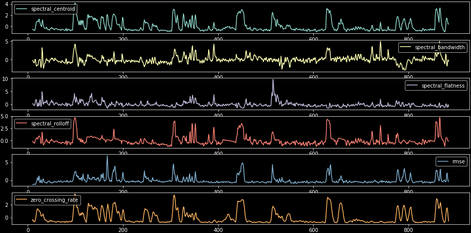
Basic statistics on spectrogram
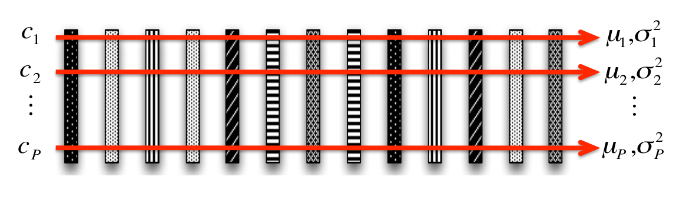
min,max,skew,Kurtosis,…
Delta frames: Difference between successive frames
Delta-delta frames: Difference between delta frames
Summarized independently.
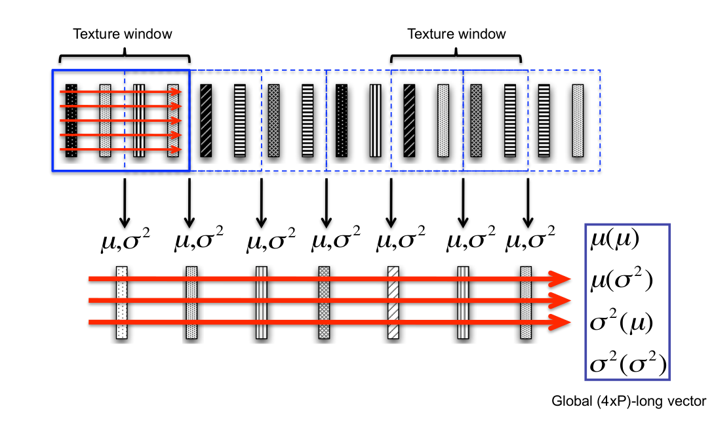
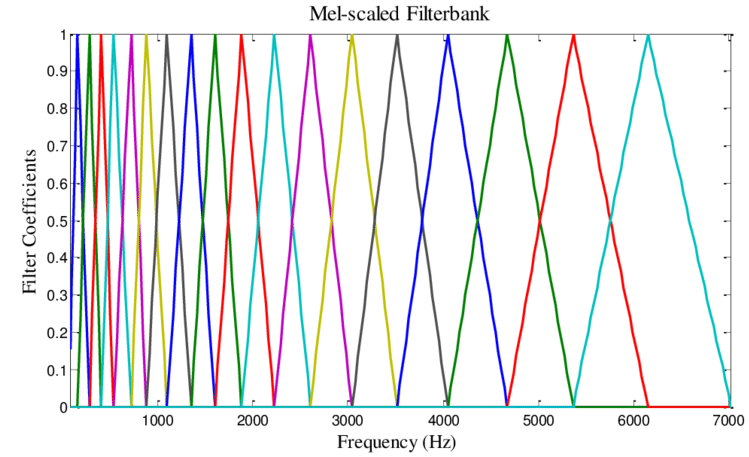
Reduces number of bands in spectrogram. Perceptually motivated.
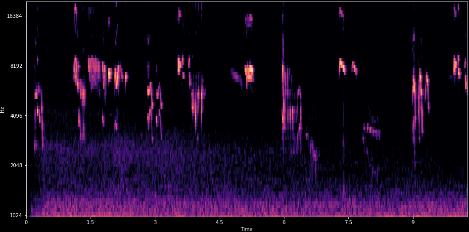
Spectrogram filtered by mel-scale triangular filters
There are birds in here!
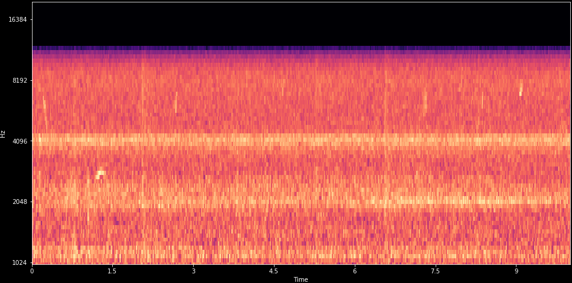
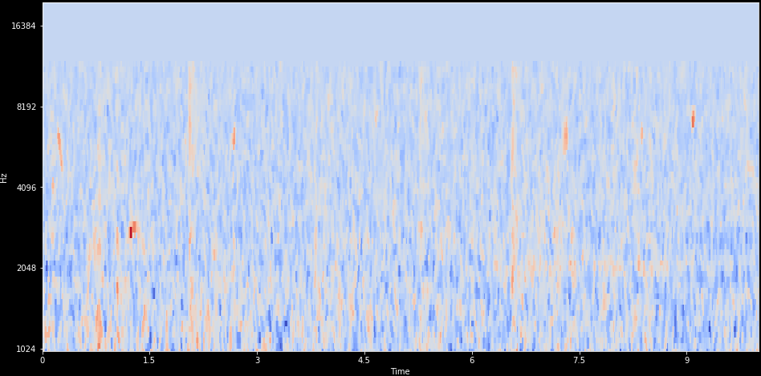
Subtracted filterbank means, added Median filter (3x3)
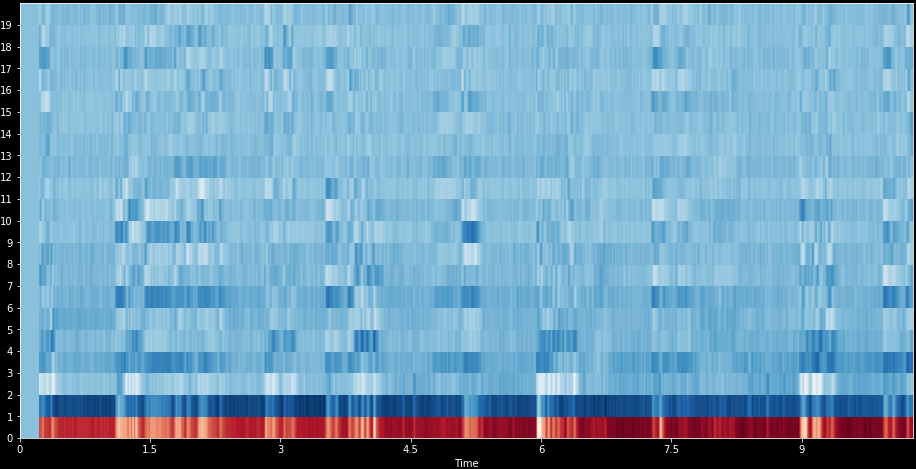
Discrete Cosine Transform (DCT-2) of mel-spectrogram
Local feature detector
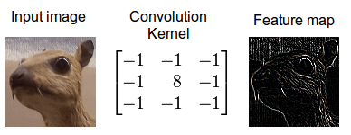
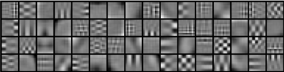
Unsupervised, from random spectrogram patches
Transfer: Copy from existing models
Examples
Not so much used
The usual suspects
Also popular in Audio Classification
https://github.com/jonnor/birddetect
Important files:
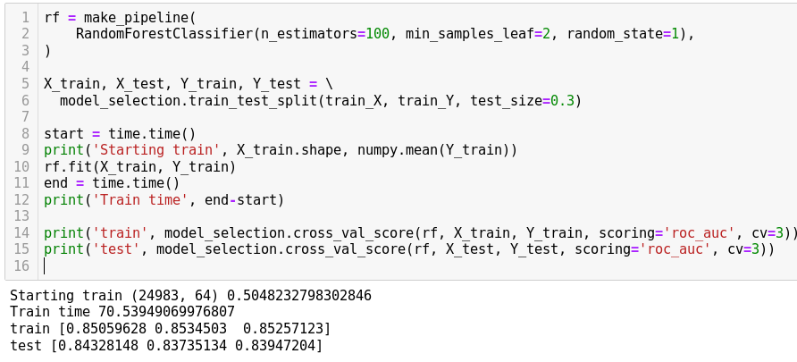
def melspec_maxp(data, sr):
params = dict(n_mels=64, fmin=500, n_fft=2048, fmax=15000, htk=True)
mel = librosa.feature.melspectrogram(y=data, sr=sr, **params)
mel = meansubtract(mel)
mel = minmaxscale(mel)
# mel = medianfilter(mel, (3,3))
features = numpy.concatenate([
numpy.max(mel, axis=1),
])
return features chunk_shape = (chunk_size, feature_length)
def extract_chunk(urls):
r = numpy.zeros(shape=chunk_shape)
for i, url in enumerate(urls):
r[i,:] = feature_extractor(url)
return r
extract = dask.delayed(extract_chunk)
def setup_extraction(urls):
values = extract(urls)
arr = dask.array.from_delayed(values,
dtype=numpy.float,
shape=chunk_shape)
return arr
arrays = [ setup_extraction(c) for c in chunk_sequence(wavfiles, chunk_size) ]
features = dask.array.concatenate(arrays, axis=0)
return features41’000 audio files… 0.2 seconds each
Laptop: 2 hours
5 dual-core workers: 10 minutes
Cost for 10 hours compute: <50 NOK
https://docs.dask.org/en/latest/setup/kubernetes.html
| Name | Features | Classifier | AUC ROC |
|---|---|---|---|
| Lasseck | melspectrogram | CNN | 89% |
| ….. | melspectrogram | CNN | 78%-84% |
| skfl | melspec-conv-skmeans | RandomForest | 73.4 % |
| jonnor | melspec-max | RandomForest | 70%[1] |
| smacpy | MFCC-meanstd | GMM | 51.7 % |
http://dcase.community/challenge2018/task-bird-audio-detection-results
1. Public leaderboard score, not submitted for challengeData Augmentation
Tricks
Try first mel-spectrogram (log or linear).
MFCC only as fallback
Try Convolutional Neural Networks (or RCNN) first.
Alternative: Learned convolutional kernels + RandomForest
Probably avoid: MFCC + GMM/HMM
Subtract mel-spectrogram mean. Consider median filtering.
Use data augmentation.
Try Transfer Learning. Can be from image model!
Return: class of this audio sample
Return: time something occurred.
Return: times of all events happening
Examples
Approaches
Return: sections of audio containing desired class
Return: audio with only the desired source
Reports from challenge tasks:
I am going! November 19-21, London.
Audio Classification often collected periodically, then training and classification done after-the-fact.
Writing a report in TIP360:
Designing a Wireless Acoustic Sensor Network for machine learning
TODO: add code samples
https://github.com/jonnor/birddetect/blob/master/Model.ipynb
What is needed for good audio classification?
Hard to discriminate sounds in realistic settings:
Actively researched using very strong models and large datasets.